جلسة افتتاحية
الترحيب والكلمة الافتتاحية
سن
المتحدثالهيئة العامة للإحصاء
المملكة العربية السعودية
مخ
يدير الحوارشعبة الإحصاءات في الأمم المتحدة
إدارة الشؤون الاقتصادية والاجتماعية

تلتقي الرياض بالعالم لبناء منظومات بيانات أكثر شمولًا وموثوقية، وتحويل المعرفة إلى قرارات تدعم التنمية المستدامة.
المملكة العربية السعودية
إدارة الشؤون الاقتصادية والاجتماعية
جلسة عامة تقودها لجنة برنامج منتدى الأمم المتحدة العالمي للبيانات.
تحسين مستويات المعيشة وتوطين أهداف التنمية المستدامة ودعم القرارات الحضرية.
مناقشة آليات عملية لتطبيق الأخلاقيات والشفافية عبر دورة حياة البيانات.
نقاش حول متطلبات الجاهزية المؤسسية والبشرية والبيانية قبل تبني الذكاء الاصطناعي.
مختبر تطبيقي لتحسين جودة البيانات الإدارية واستخدامها في اتخاذ قرارات أفضل.
جلسة عامة حول تجديد الثقة في البيانات والإحصاءات الرسمية في بيئة سريعة التغير.
ورشة تطبيقية لتبادل الممارسات الإحصائية وبناء قدرات الفرق في إنتاج بيانات موثوقة وقابلة للاستخدام.
حوار يربط المؤشرات الإحصائية بتجارب الناس واحتياجات المجتمع وجودة الحياة.
مساحة تنافسية لتطوير نماذج وحلول قابلة للتطبيق باستخدام الذكاء الاصطناعي وتحليلات البيانات.
استعراض أساليب ومصادر جديدة ترفع سرعة وجودة إنتاج الإحصاءات الرسمية.
كيف تدعم البيانات أهداف الاستدامة، وتحوّل القياس الدقيق إلى تدخلات ذات أثر طويل المدى.
المملكة العربية السعودية • 9–12 نوفمبر 2026


